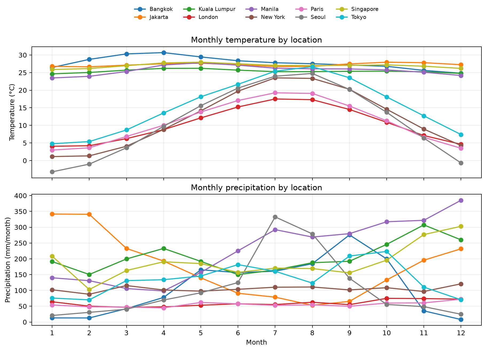
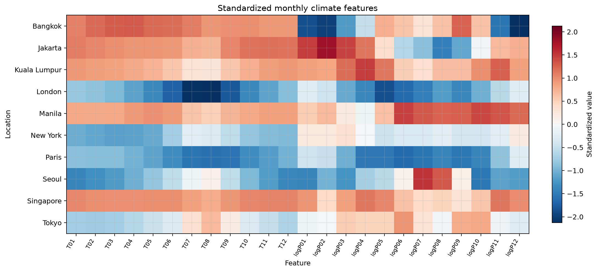
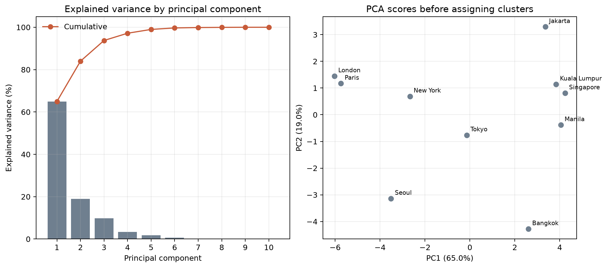
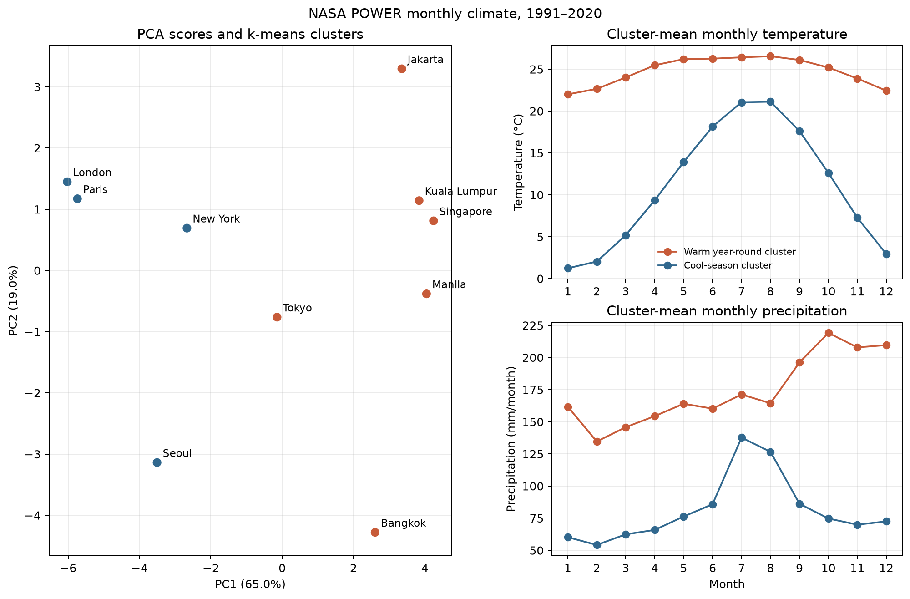
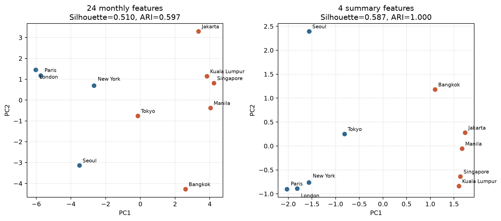

気温・降水量から10地点の気候帯をクラスタリングする方法
元の質問
気温と降水量の時系列データが10地点であります。10地点は2つの気候帯に所属しています。このとき、ケッペンの気候区分などを用いることなく、簡単な機械学習によって気候帯をクラスタリングする方法は？
回答
各地点を「月平均気温12個＋月降水量12個」のベクトルに変換し、標準化、主成分分析（PCA）、k-means の順に処理して、クラスタ数を2に固定する方法が簡単です。ケッペン区分の閾値も、既知の気候帯ラベルも学習には使いません。
ただし、地点数が10しかないため、得られるのは汎用的な気候分類モデルではなく、今回の10地点の中で似た季節変化を持つ地点を2群に分けた結果です。シルエット係数、別手法との一致、期間を分けた再計算によって、分割が安定しているかを必ず確認します。
この演習で行うこと
- 年月別CSVを読み、列と行数を確認する。
- 10地点の期間が同じで、各地点に360か月あることを確認する。
- 30年間を暦月ごとに平均し、10地点×12か月の月別気候値を作る。
- 折れ線グラフを描き、分類前の季節変化を見る。
- 気温12変数と降水量12変数を作り、標準化する。
- PCAで2成分へ圧縮し、
k-meansで2群に分ける。 - 特徴量を変えても結論が保たれるか確認する。
0. 演習ファイルを準備する
まず、年月別CSVと全解析・描画スクリプトを同じフォルダへ保存します。CSVは10地点×30年×12か月の3,600行で、列は station、known_group、date、temp_c、precip_mm です。
known_group は最後の答え合わせだけに使います。気温・降水量の集計、PCA、k-meansへは入力しません。取得元まで再現したい場合だけ、3番目のNASA POWER取得スクリプトを使います。
コードは同じノートブックで上から実行する
段階1〜8の短いコードは、Jupyter Notebookや学校で指定されたPythonノートブックの同じノートブックへ、1ブロックずつ貼り付けて上から実行します。前の段階で作った data や climatology を次の段階でも使うため、途中でカーネルを再起動した場合は段階1から実行し直します。
手元にJupyter環境がない場合、uv を導入済みなら、CSVを置いたフォルダで次のコマンドを実行して起動できます。
uv run \
--with pandas \
--with numpy \
--with scikit-learn \
--with matplotlib \
--with jupyter \
jupyter labブラウザで新しいPythonノートブックを作り、CSVと同じフォルダに保存してから段階1へ進みます。
処理の理由を先に読みたい場合の補足
まず「地点×特徴量」の表に変える
生の時系列をそのまま1本の長い入力にすると、欠測、観測期間、年々変動の違いまで距離に混ざります。最初の解析では、全地点に共通する期間から月別気候値を作る方が解釈しやすくなります。WMOの標準平年値は連続する30年間の平均として定義されていますが、手元の期間が短ければ、共通して利用できる期間で暦月平均を作り、「このデータ期間内の平均」であることを明記します。[1]
| 特徴量案 | 内容 | 使いどころ |
|---|---|---|
| 月別24変数 | 1〜12月の平均気温と月降水量 | 季節の位相と形を残す基本案 |
| 要約6〜8変数 | 年平均気温、気温年較差、年降水量、最多雨月、降水の季節集中度など | 10地点に対して次元をさらに抑えたい場合 |
月別24変数は分かりやすい一方、10地点より変数数が多いため、そのままの距離は不安定になりやすい構成です。PCAは、中心化したデータを低次元空間へ線形に射影する方法なので、ここではクラスタリング前の圧縮に使います。PCA自体は変数を尺度調整しないため、先に標準化します。[2][3]
なぜ降水量を変換し、全変数を標準化するのか
降水量は少数の多雨月・多雨地点が大きな値を取りやすいため、log1p で極端な差を緩めます。その後、各変数を平均0・分散1へ標準化すると、単位と変動幅の大きい変数だけがユークリッド距離を支配することを防げます。scikit-learnの資料も、分散の桁が大きく異なる特徴量は学習目的を支配し得ること、標準化は外れ値に敏感であることを注意点として挙げています。[2]
したがって、観測ミスや極端な外れ値を先に確認します。正当な豪雨を機械的に削除するのではなく、StandardScaler と RobustScaler の両方で結果が変わるかを見るのが安全です。
1. CSVを読み、最初の5行を見る
まずは機械学習を始めず、ファイルを正しく読めたかだけを確認します。CSVとPythonファイルを同じフォルダへ置き、次のコードを上から順に実行してください。
import pandas as pd
csv_path = "nasa-power-10-locations-monthly-1991-2020.csv"
data = pd.read_csv(csv_path, parse_dates=["date"])
print(data.shape)
print(data.head())(3600, 5) と表示され、その後に次のような5行が出れば読み込み成功です。
station,known_group,date,temp_c,precip_mm
Bangkok,Tropical,1991-01-01,28.45,1.24
Bangkok,Tropical,1991-02-01,29.30,9.52
Bangkok,Tropical,1991-03-01,31.46,17.672. 全地点に同じ360か月があるか確認する
地点によって期間が違うと、気候差に観測期間の差が混ざります。地点別の開始日、終了日、年月数を表示します。
coverage = (
data.groupby("station")["date"]
.agg(start="min", end="max", months="nunique")
)
print(coverage)
if not (coverage["months"] == 360).all():
raise ValueError("360か月そろっていない地点があります。")
if coverage["start"].nunique() != 1 or coverage["end"].nunique() != 1:
raise ValueError("地点間で解析期間が一致していません。")10地点すべてで開始が 1991-01-01、終了が 2020-12-01、月数が 360 になれば次へ進みます。
3. 30年間を暦月ごとに平均する
date から月番号を取り出し、たとえば全30年の1月を平均して「代表的な1月」を作ります。これを12か月・10地点について行います。
data["month"] = data["date"].dt.month
climatology = (
data.groupby(
["station", "month"],
as_index=False,
)
.agg(
temp_c=("temp_c", "mean"),
precip_mm=("precip_mm", "mean"),
)
)
print(climatology.shape)
print(climatology.head())結果は (120, 4)、つまり10地点×12か月になります。known_group はここでも使っていません。ここまでが前処理です。次から、この120行を図にして内容を確認します。
4. 月別気候値を図で確認する
この演習データは、NASA POWERの月別APIから取得した1991〜2020年の2 m気温 T2M と補正降水量 PRECTOTCORR です。POWERの気象変数はMERRA-2同化モデルに由来するため、地上観測所ではなく、各都市座標に対応する格子気候データです。[7][8]
まず、前の段階で作った120行の climatology を、地点を行、月を列とする2つの表へ変えます。
temperature = climatology.pivot(
index="station", columns="month", values="temp_c"
)
precipitation = climatology.pivot(
index="station", columns="month", values="precip_mm"
)
print(temperature.shape)
print(precipitation.shape)どちらも (10, 12) になれば成功です。分類前に折れ線グラフを描くと、熱帯側5地点は気温の年較差が小さく、中緯度側は冬と夏の差が大きいことが見えます。一方、降水の季節変化は地点ごとにかなり異なります。東京は中緯度側の中では温暖・多雨で、境界例になりそうだと予想できます。
以下の描画コードは、ここまでのノートブックで作った変数を直接受け取る版です。各コード末尾の呼び出しまで実行するとPNGを保存します。完全版スクリプトは、同じ処理をまとめて実行するためのものです。

図1の描画コードを見る
from pathlib import Path
import matplotlib.pyplot as plt
import numpy as np
import pandas as pd
def plot_input_cycles(
temperature: pd.DataFrame,
precipitation: pd.DataFrame,
output_path: Path,
) -> None:
"""全地点の月別気温・降水量を同じ軸で描く。"""
months = np.arange(1, 13)
colors = plt.get_cmap("tab10")(np.linspace(0, 1, len(temperature)))
fig, axes = plt.subplots(
2, 1, figsize=(10, 7.2), sharex=True, constrained_layout=True
)
for color, station in zip(colors, temperature.index, strict=True):
axes[0].plot(
months, temperature.loc[station],
marker="o", linewidth=1.6, color=color, label=station
)
axes[1].plot(
months, precipitation.loc[station],
marker="o", linewidth=1.6, color=color, label=station
)
axes[0].set_title("Monthly temperature by location")
axes[0].set_ylabel("Temperature (°C)")
axes[1].set_title("Monthly precipitation by location")
axes[1].set_xlabel("Month")
axes[1].set_ylabel("Precipitation (mm/month)")
axes[1].set_xticks(months)
axes[0].legend(
loc="upper center", bbox_to_anchor=(0.5, 1.34), ncol=5, fontsize=8
)
fig.savefig(output_path, bbox_inches="tight")
plt.close(fig)
plot_input_cycles(
temperature=temperature,
precipitation=precipitation,
output_path=Path("figure1.png"),
)5. 24個の特徴量へ変換して標準化する
各地点を、気温12か月と log1p 変換した降水量12か月の計24変数へ変えます。さらに各列を平均0・分散1へ標準化します。図2では赤が10地点平均より大きい値、青が小さい値です。左半分の気温列には、通年正側の地点と冬に負側へ下がる地点という大きなパターンが見えます。
log1p 変換とは？
np.log1p(x) は、値 x に1を足してから自然対数を取る関数で、np.log(1 + x) と同じ計算を小さい値でも精度よく行います。[9] 降水量が0の月は変換後も0になるため、0を含む降水量にもそのまま使えます。
たとえば、0、9、99 mmはおよそ0、2.30、4.61へ変わります。元の値は10倍ずつ増えていますが、変換後の差はほぼ同じです。このように大きな降水量の差を圧縮し、少数の多雨地点・多雨月が距離計算を支配しにくくします。変換後の値はmmではないため、図や結果の解釈では元の降水量を使います。
import numpy as np
from sklearn.preprocessing import StandardScaler
temperature_features = temperature.copy()
precipitation_features = np.log1p(precipitation)
temperature_features.columns = [
f"T{int(month):02d}" for month in temperature.columns
]
precipitation_features.columns = [
f"logP{int(month):02d}" for month in precipitation.columns
]
features = temperature_features.join(precipitation_features)
scaled = StandardScaler().fit_transform(features)
図2の描画コードを見る
from pathlib import Path
import matplotlib.pyplot as plt
import numpy as np
import pandas as pd
def plot_standardized_heatmap(
features: pd.DataFrame,
scaled: np.ndarray,
output_path: Path,
) -> None:
"""標準化後の24特徴量を地点×特徴量のヒートマップで描く。"""
limit = float(np.abs(scaled).max())
fig, ax = plt.subplots(figsize=(12, 5.4), constrained_layout=True)
image = ax.imshow(
scaled, aspect="auto", cmap="RdBu_r", vmin=-limit, vmax=limit
)
ax.set_title("Standardized monthly climate features")
ax.set_xlabel("Feature")
ax.set_ylabel("Location")
ax.set_xticks(np.arange(features.shape[1]))
ax.set_xticklabels(
features.columns, rotation=60, ha="right", fontsize=8
)
ax.set_yticks(np.arange(features.shape[0]))
ax.set_yticklabels(features.index)
colorbar = fig.colorbar(image, ax=ax, shrink=0.9)
colorbar.set_label("Standardized value")
fig.savefig(output_path, bbox_inches="tight")
plt.close(fig)
plot_standardized_heatmap(
features=features,
scaled=scaled,
output_path=Path("figure2.png"),
)6. PCAで圧縮し、まだ色を付けずに配置を見る
24次元の標準化データをPCAで2次元へ圧縮します。第1主成分の寄与率は 65.0%、第2主成分は 19.0%、累積で 84.0% です。右図にはまだクラスタ色を付けていません。この時点で左右方向に大きな分離がある一方、東京が両側の中間に位置することを確認します。
from sklearn.decomposition import PCA
pca = PCA(n_components=2)
scores = pca.fit_transform(scaled)
print(pca.explained_variance_ratio_)
print("累積寄与率:", pca.explained_variance_ratio_.sum())PC1とPC2は何を表すのか
PC1とPC2は気温や降水量そのものではなく、標準化した24特徴量を重み付きで足し合わせた新しい座標軸です。PC1は10地点のばらつきが最も大きく見える向き、PC2はPC1と直交する向きのうち、次にばらつきが大きく見える向きです。pca.components_ に入る主成分係数は各特徴量の重みで、絶対値が大きいほどその軸の向きへ強く寄与すると読みます。[3]
loading_table = pd.DataFrame(
pca.components_.T,
index=features.columns,
columns=["PC1", "PC2"],
)
print(loading_table.round(3))
climate_summary = pd.DataFrame(
{
"annual_temp": temperature.mean(axis=1),
"temp_range": temperature.max(axis=1) - temperature.min(axis=1),
"annual_precip": precipitation.sum(axis=1),
"precip_cv": precipitation.std(axis=1) / precipitation.mean(axis=1),
}
)
pca_scores = pd.DataFrame(
scores,
index=features.index,
columns=["PC1", "PC2"],
)
print(
pca_scores.join(climate_summary)
.corr()
.loc[["PC1", "PC2"], climate_summary.columns]
.round(3)
)loading_table.round(3) の実行結果は次のようになります。ここで T01 は1月の気温、logP01 は log1p 変換後の1月降水量です。
PC1 PC2
T01 0.228 0.058
T02 0.228 0.029
T03 0.229 0.006
T04 0.236 -0.022
T05 0.242 -0.039
T06 0.244 -0.077
T07 0.226 -0.139
T08 0.215 -0.153
T09 0.245 -0.061
T10 0.248 0.003
T11 0.243 0.042
T12 0.235 0.068
logP01 0.117 0.399
logP02 0.109 0.385
logP03 0.171 0.284
logP04 0.207 0.146
logP05 0.242 -0.077
logP06 0.191 -0.213
logP07 0.125 -0.290
logP08 0.113 -0.317
logP09 0.168 -0.296
logP10 0.219 -0.023
logP11 0.170 0.270
logP12 0.104 0.358さらに、PC得点と年平均気温・気温年較差・年降水量・降水量の月間変動係数との相関は、同じコードの後半で次のように出ます。
annual_temp temp_range annual_precip precip_cv
PC1 0.956 -0.758 0.909 0.211
PC2 0.005 -0.342 0.159 -0.689次の表は、これらの出力をそのまま転載したものではなく、学習者が読みやすいように符号、値の範囲、季節的なまとまり、相関を要約したものです。たとえばPC1の「0.215〜0.248」は T01〜T12 のPC1列の最小値・最大値、PC1の「0.104〜0.242」は logP01〜logP12 のPC1列の最小値・最大値から来ています。PC2の冬雨・夏雨の説明は、logP01、logP02、logP12 などが正で、logP06〜logP09 が負になることから読んでいます。「年平均気温との相関は0.956、年降水量とは0.909」は、上の相関表のPC1行にある annual_temp と annual_precip の値です。
| 軸 | このデータで大きかった主成分係数 | 図3・図4での読み方 |
|---|---|---|
| PC1（65.0%） | 12か月の気温がすべて正（0.215〜0.248）。降水量も全月が正（0.104〜0.242） | 右ほど通年で暖かく多雨、左ほど寒候季があり相対的に少雨。年平均気温との相関は0.956、年降水量とは0.909 |
| PC2（19.0%） | 11〜4月の降水量が正、6〜9月の降水量が負。気温の主成分係数は比較的小さい | 上ほど冬雨寄り、下ほど夏雨寄り。年平均気温との相関は0.005で、主に降水の季節配分を表す |
軸の正負には絶対的な意味はありません。PCAの計算結果では軸全体の符号が反転することがあり、その場合は図の左右または上下が入れ替わります。地点間の距離やクラスタリング結果は変わらないため、「PC1は常に右ほど高温」と覚えず、その解析で得た主成分係数を見て解釈します。
PC3以降を使う場合もある
あります。図で見せるためにはPC1・PC2の2次元が分かりやすい一方、クラスタリングではPC3以降も使うことがあります。たとえば「累積寄与率が90%を超えるまでのPCを使う」「PC1〜PC4を使う」と決め、k-meansにはその多次元のPCA得点を渡します。この教材では、PC1とPC2だけで累積寄与率が約84.0%あり、図4の平面上で距離と所属を説明しやすいため、主手順では2成分に固定しています。
from sklearn.cluster import KMeans
full_pca = PCA().fit(scaled)
all_scores = full_pca.transform(scaled)
cumulative_ratio = np.cumsum(full_pca.explained_variance_ratio_)
print(cumulative_ratio.round(3))
# 例: 累積寄与率が90%以上になる最小のPC数を使う
n_components_for_clustering = np.searchsorted(
cumulative_ratio, 0.90
) + 1
scores_for_clustering = all_scores[:, :n_components_for_clustering]
labels_high_dim = KMeans(
n_clusters=2, n_init=50, random_state=42
).fit_predict(scores_for_clustering)高次元PCを使う利点は、PC1・PC2だけでは落ちる細かな季節性を分類に残せることです。一方で、10地点しかない演習ではPC数を増やすほど小さな差やノイズにも反応しやすくなります。そのため、PC数を増やした場合は、分類結果が大きく変わるか、シルエット係数や既知ラベルとのARIがどう変わるかを感度確認として扱います。

図3の描画コードを見る
from pathlib import Path
import matplotlib.pyplot as plt
import numpy as np
import pandas as pd
from sklearn.decomposition import PCA
def plot_pca_before_clustering(
features: pd.DataFrame,
scaled: np.ndarray,
output_path: Path,
) -> None:
"""主成分の寄与率と、色分け前のPC1・PC2得点を描く。"""
full_pca = PCA().fit(scaled)
scores = full_pca.transform(scaled)
numbers = np.arange(1, len(full_pca.explained_variance_ratio_) + 1)
fig, axes = plt.subplots(
1, 2, figsize=(11, 4.8), constrained_layout=True
)
axes[0].bar(
numbers, full_pca.explained_variance_ratio_ * 100,
color="#6f7f8f"
)
axes[0].plot(
numbers,
np.cumsum(full_pca.explained_variance_ratio_) * 100,
marker="o", color="#c75b39", label="Cumulative"
)
axes[0].set_title("Explained variance by principal component")
axes[0].set_xlabel("Principal component")
axes[0].set_ylabel("Explained variance (%)")
axes[0].set_xticks(numbers)
axes[0].set_ylim(0, 105)
axes[0].legend()
axes[1].scatter(
scores[:, 0], scores[:, 1],
s=70, color="#6f7f8f", edgecolor="white"
)
for index, station in enumerate(features.index):
axes[1].annotate(
station, (scores[index, 0], scores[index, 1]),
xytext=(5, 5), textcoords="offset points", fontsize=8
)
axes[1].set_title("PCA scores before assigning clusters")
axes[1].set_xlabel(
f"PC1 ({full_pca.explained_variance_ratio_[0] * 100:.1f}%)"
)
axes[1].set_ylabel(
f"PC2 ({full_pca.explained_variance_ratio_[1] * 100:.1f}%)"
)
fig.savefig(output_path, bbox_inches="tight")
plt.close(fig)
plot_pca_before_clustering(
features=features,
scaled=scaled,
output_path=Path("figure3.png"),
)7. k-meansで2群に分ける
PCA得点に n_clusters=2 のk-meansを適用します。クラスタ番号は任意なので、ここでは結果を読みやすくするため、年平均気温が高い方を「通年高温群」と呼びます。右側には各群に入った地点の気温・降水量を平均し、分類後に初めて群の特徴を描きます。
from sklearn.cluster import KMeans
from sklearn.metrics import silhouette_samples, silhouette_score
def relabel_by_temperature(
labels: np.ndarray,
temperature: pd.DataFrame,
) -> np.ndarray:
"""年平均気温が高い群をクラスタ0へそろえる。"""
annual_temperature = temperature.mean(axis=1).to_numpy()
cluster_means = {
label: annual_temperature[labels == label].mean()
for label in np.unique(labels)
}
warm_label = max(cluster_means, key=cluster_means.get)
return np.where(labels == warm_label, 0, 1)
raw_labels = KMeans(
n_clusters=2, n_init=50, random_state=42
).fit_predict(scores)
labels = relabel_by_temperature(raw_labels, temperature)
cluster_result = pd.DataFrame(
{
"station": features.index,
"cluster": labels,
"pc1": scores[:, 0],
"pc2": scores[:, 1],
}
)
print(cluster_result.sort_values(["cluster", "station"]))
point_silhouette = pd.Series(
silhouette_samples(scores, labels),
index=features.index,
name="silhouette",
)
print(point_silhouette.sort_values())
print("平均シルエット係数:", silhouette_score(scores, labels))この問題で使ったユークリッド距離
ここでk-meansが扱う1つの点は、1地点の scores、つまりPCA後の2次元座標 PC1 と PC2 です。したがって、この段階の距離は、元の気温℃や降水量mmを直接比べた距離ではありません。標準化済み24特徴量をPCAで2次元へ写した後、PC1・PC2平面上で次のユークリッド距離を計算しています。
\[ d(i,j)=\sqrt{(x_{i1}-x_{j1})^2+(x_{i2}-x_{j2})^2} \]
ここで \(x_{i1}\) は地点 \(i\) のPC1得点、\(x_{i2}\) は地点 \(i\) のPC2得点です。k-meansは、各地点を近い重心へ割り当て、同じクラスタ内でこの距離の二乗和が小さくなるように重心を更新します。[4]
もしPC1〜PC \(m\) までをクラスタリングに使うなら、同じ考え方で次の距離になります。
\[ d_m(i,j)=\sqrt{\sum_{k=1}^{m}(x_{ik}-x_{jk})^2} \]
つまり、2次元なら図4の平面上の距離、3次元以上なら画面には描きにくい多次元空間上の距離です。PCを何個使うかを変えると、この距離も変わるため、東京のような境界的な地点の所属が変わることがあります。
pca_scores = pd.DataFrame(
scores,
index=features.index,
columns=["PC1", "PC2"],
)
cluster_centers = pca_scores.groupby(labels).mean().sort_index()
distances_to_centers = pd.DataFrame(
np.linalg.norm(
scores[:, None, :] - cluster_centers.to_numpy()[None, :, :],
axis=2,
),
index=features.index,
columns=[
f"distance_to_cluster_{label}"
for label in cluster_centers.index
],
)
print(cluster_centers.round(3))
print(distances_to_centers.round(3))この実行では、クラスタ0（通年高温群）の重心は PC1=2.991, PC2=-0.029、クラスタ1（寒候季あり群）の重心は PC1=-4.487, PC2=0.044 です。たとえば東京のPCA得点はおよそ PC1=-0.143, PC2=-0.762 で、クラスタ0重心までの距離は 3.219、クラスタ1重心までの距離は 4.418 です。クラスタ0の方が近いため、東京は通年高温群側に入ります。ただし差が圧倒的に大きいわけではないので、後で見るシルエット係数は0に近くなります。
シルエット係数とは？
ある地点 \(i\) について、同じクラスタ内の他地点までの平均距離を \(a(i)\)、最も近い別クラスタまでの平均距離を \(b(i)\) とします。地点ごとのシルエット係数は次のように計算します。[5][10]
\[ s(i)=\frac{b(i)-a(i)}{\max\{a(i),b(i)\} } \]
- 1に近い: 自分のクラスタ内では近く、別クラスタから十分に離れている。
- 0に近い: 2群の境界付近にあり、どちらへ入っても距離があまり変わらない。
- 負: 現在のクラスタより、別クラスタの方が近い可能性がある。
silhouette_score は、この地点別係数の平均です。今回の平均は0.510ですが、東京は0.040でほぼ境界でした。他の9地点は0.358〜0.694です。したがって「全体として2群は見えるが、東京の所属には強い確信を持てない」と読みます。0.5以上なら常に合格、という普遍的な閾値ではありません。

図4の描画コードを見る
from pathlib import Path
import matplotlib.pyplot as plt
import numpy as np
import pandas as pd
def plot_cluster_result(
temperature: pd.DataFrame,
precipitation: pd.DataFrame,
scores: np.ndarray,
labels: np.ndarray,
output_path: Path,
) -> None:
"""PC得点の2群と、各群の平均季節変化を描く。"""
colors = np.where(labels == 0, "#c75b39", "#31688e")
fig = plt.figure(figsize=(11, 7.2), constrained_layout=True)
grid = fig.add_gridspec(2, 2, width_ratios=[1.15, 1])
ax_scatter = fig.add_subplot(grid[:, 0])
ax_temp = fig.add_subplot(grid[0, 1])
ax_precip = fig.add_subplot(grid[1, 1])
ax_scatter.scatter(
scores[:, 0], scores[:, 1],
c=colors, s=75, edgecolor="white"
)
for index, station in enumerate(temperature.index):
ax_scatter.annotate(
station,
(scores[index, 0], scores[index, 1]),
xytext=(5, 5), textcoords="offset points", fontsize=9
)
ax_scatter.set_title("PCA scores and k-means clusters")
ax_scatter.set_xlabel("PC1")
ax_scatter.set_ylabel("PC2")
months = np.arange(1, 13)
cluster_styles = [
(0, "#c75b39", "Warm year-round cluster"),
(1, "#31688e", "Cool-season cluster"),
]
for label, color, name in cluster_styles:
members = temperature.index[labels == label]
ax_temp.plot(
months, temperature.loc[members].mean(axis=0),
marker="o", color=color, label=name
)
ax_precip.plot(
months, precipitation.loc[members].mean(axis=0),
marker="o", color=color, label=name
)
ax_temp.set_title("Cluster-mean monthly temperature")
ax_temp.set_ylabel("Temperature (°C)")
ax_precip.set_title("Cluster-mean monthly precipitation")
ax_precip.set_xlabel("Month")
ax_precip.set_ylabel("Precipitation (mm/month)")
ax_temp.legend(fontsize=8)
fig.savefig(output_path, bbox_inches="tight")
plt.close(fig)
plot_cluster_result(
temperature=temperature,
precipitation=precipitation,
scores=scores,
labels=labels,
output_path=Path("figure4.png"),
)図4左の横軸と縦軸は、段階6で解釈したものと同じPC1・PC2です。2群の主な分離は横方向のPC1、つまり通年の暖かさ・湿潤さで生じています。縦方向のPC2は降水季節性を補足し、冬雨寄りのジャカルタ・ロンドン・パリは上側、夏雨寄りのバンコク・ソウルは下側へ配置されます。東京はPC1がほぼ中央にあり、地点別シルエット係数も0に近いため、特徴量を変えると所属が変わりやすい地点です。
月別24特徴量の結果は、シルエット係数 0.510 でした。熱帯側5地点とロンドン、パリ、ニューヨーク、ソウルは事前グループと一致しましたが、東京だけが通年高温群側に入り、事前グループとのARIは 0.597 でした。
| 得られた群 | 所属地点 | 事前グループとの相違 |
|---|---|---|
| 通年高温群 | バンコク、ジャカルタ、クアラルンプール、マニラ、シンガポール、東京 | 東京のみ |
| 寒候季あり群 | ロンドン、ニューヨーク、パリ、ソウル | なし |
8. 特徴量を変えて分類の感度を見る
次に同じデータを、年平均気温、気温年較差、年降水量、降水量の月間変動係数という4変数へ要約して再計算します。要約4変数では東京が中緯度側へ移り、事前グループと5地点ずつ一致しました。
ARIとは？
ARIは Adjusted Rand Index の略で、2つの分類結果がどれくらい一致しているかを測る指標です。ここでは、機械学習で得た2群と、配布CSVに入っている事前グループ known_group がどの程度一致したかの答え合わせに使います。[6]
- 1.0: 2つの分け方が完全に一致している。
- 0付近: ランダムに分けた場合と同程度の一致。
- 負の値: ランダムより一致が悪い。
クラスタ番号の 0 と 1 が入れ替わってもARIは変わりません。そのため、k-meansの「クラスタ0」「クラスタ1」という番号に意味がない場面でも、既知ラベルとの一致度を確認できます。ただし known_group はクラスタリングには入れず、解析が終わった後の外部評価だけに使います。
from sklearn.metrics import adjusted_rand_score
summary_features = pd.DataFrame(
{
"annual_temp": temperature.mean(axis=1),
"temp_range": temperature.max(axis=1) - temperature.min(axis=1),
"log_annual_precip": np.log1p(precipitation.sum(axis=1)),
"precip_cv": precipitation.std(axis=1) / precipitation.mean(axis=1),
}
)
summary_scaled = StandardScaler().fit_transform(summary_features)
summary_scores = PCA(n_components=2).fit_transform(summary_scaled)
summary_labels = KMeans(
n_clusters=2, n_init=50, random_state=42
).fit_predict(summary_scores)
# known_groupを使うのは、クラスタリング終了後の答え合わせだけ
known_group = (
data[["station", "known_group"]]
.drop_duplicates()
.set_index("station")
.loc[summary_features.index, "known_group"]
)
known_numeric = (known_group == "Mid-latitude").astype(int)
print("事前グループとのARI:", adjusted_rand_score(
known_numeric, summary_labels
))
図5の描画コードを見る
from pathlib import Path
import matplotlib.pyplot as plt
import numpy as np
import pandas as pd
from sklearn.metrics import adjusted_rand_score, silhouette_score
def plot_feature_sensitivity(
monthly_scores: np.ndarray,
monthly_labels: np.ndarray,
monthly_silhouette: float,
monthly_ari: float,
summary_scores: np.ndarray,
summary_labels: np.ndarray,
summary_silhouette: float,
summary_ari: float,
station_names: pd.Index,
output_path: Path,
) -> None:
"""月別24変数と要約4変数のクラスタ結果を並べて描く。"""
label_offsets = {
"London": (6, -14),
"New York": (6, 8),
"Paris": (6, 6),
}
fig, axes = plt.subplots(
1, 2, figsize=(11, 4.8), constrained_layout=True
)
panels = [
(
"24 monthly features",
monthly_scores,
monthly_labels,
monthly_silhouette,
monthly_ari,
),
(
"4 summary features",
summary_scores,
summary_labels,
summary_silhouette,
summary_ari,
),
]
for ax, panel in zip(axes, panels, strict=True):
title, panel_scores, panel_labels, panel_silhouette, panel_ari = panel
colors = np.where(panel_labels == 0, "#c75b39", "#31688e")
ax.scatter(
panel_scores[:, 0], panel_scores[:, 1],
c=colors, s=70, edgecolor="white"
)
for index, station in enumerate(station_names):
ax.annotate(
station,
(panel_scores[index, 0], panel_scores[index, 1]),
xytext=label_offsets.get(station, (5, 5)),
textcoords="offset points",
fontsize=8,
)
ax.set_title(
f"{title}\n"
f"Silhouette={panel_silhouette:.3f}, ARI={panel_ari:.3f}"
)
ax.set_xlabel("PC1")
ax.set_ylabel("PC2")
fig.savefig(output_path, bbox_inches="tight")
plt.close(fig)
plot_feature_sensitivity(
monthly_scores=scores,
monthly_labels=labels,
monthly_silhouette=silhouette_score(scores, labels),
monthly_ari=adjusted_rand_score(known_numeric, labels),
summary_scores=summary_scores,
summary_labels=summary_labels,
summary_silhouette=silhouette_score(summary_scores, summary_labels),
summary_ari=adjusted_rand_score(known_numeric, summary_labels),
station_names=features.index,
output_path=Path("figure5.png"),
)| 特徴量と処理 | シルエット係数 | 事前グループとのARI |
|---|---|---|
| 月別24変数 → PCA 2成分 | 0.510 | 0.597 |
| 要約4変数 → PCA 2成分 | 0.587 | 1.000 |
| 月別気温12変数 → PCA 2成分 | 0.740 | 1.000 |
東京が移ったことは計算ミスではありません。クラスタは既存の気候帯名を再現するものではなく、選んだ特徴量における近さを表します。ただし、答え合わせ後に最もARIが高い特徴量だけを採用すると10地点への過適合になります。この比較は感度診断として使い、分類したい気候差を先に定義します。
分類結果の読み方と、追加の安定性確認
結果をどう読むか
- クラスタ番号に意味はない:
0と1は入れ替わっても同じ分割です。 - クラスタ中心を元の単位で比較する: 各群について12か月の平均気温・降水量を描き、「高温群」「夏雨群」などデータに即した名前を後から付けます。
- PCAの主成分係数を見る: どの月の気温・降水量が群分けに効いたかを確認します。
- 地図上でも確認する: 緯度・経度を学習に入れなくても、結果が地理的に不自然に飛び散っていないかを診断します。
10地点だから必要な安定性確認
段階7で計算したシルエット係数は、平均値だけでなく地点別の値も確認します。ただし10地点では、1地点の外れ値だけで高い値になることもあるため、単独の合否基準にはしません。原論文も、遠い外れ値が強いクラスタ構造に見える例に注意を促しています。[5]
最低限、次の3点を確認します。
- 手法を変える: k-meansとWard法の階層クラスタリングで、ほぼ同じ2群になるか。
- 期間を変える: 観測期間を前半・後半に分け、それぞれで月別気候値から再計算して同じ地点群になるか。
- 特徴量を変える: 月別24変数と要約6〜8変数で、結論が大きく変わらないか。
既知の2つの気候帯ラベルがある場合も、ラベルは上の処理に入力せず、解析を固定した後にARIなどで外部評価します。これは「正解ラベルを使わずに見つけられたか」の確認であり、クラスタリング自体の学習ではありません。
9. 全段階をまとめて再実行する
上の短いコードを1つずつ確認した後、配布した完全版スクリプトで同じ処理をまとめて再実行できます。CSVとスクリプトを同じフォルダへ置き、そのフォルダで次を実行します。
uv run --with numpy --with pandas --with scikit-learn --with matplotlib \
nasa-power-clustering-exercise.py \
--input nasa-power-10-locations-monthly-1991-2020.csv \
--output-dir outputs \
--overwriteoutputs フォルダに図5枚と cluster-assignments.csv が作られます。途中で分からなくなった場合は、前の段階へ戻り、各 print の形と値を確認してください。
条件によって変える点
- 南北両半球の地点を混ぜる場合: 暦月をそのまま使うと、夏が半年ずれていること自体が大きな距離になります。それを気候帯の違いとしたくない場合は、各地点の最暖月が同じ位置に来るよう月を循環移動してから比較します。
- 年々変動も分類に使いたい場合: 月別平均だけでなく、気温・降水量の年々変動の標準偏差を少数追加します。
- 観測期間が短い場合: 「気候帯」と断定せず、観測期間中の温度・降水季節性による2群と表現します。
- 結果が不安定な場合: 2群がデータから自然に分かれていない可能性があります。既知の2気候帯へ無理に対応付けず、「この10地点の気温・降水量だけでは識別できない」と結論づけます。
まとめ
最初に試す方法は、共通期間の月別気候値 → 降水量の対数変換 → 標準化 → PCA → k-means（2群）です。10地点では高性能なアルゴリズムを探すより、特徴量を気候学的に解釈できる形へ整え、期間・特徴量・手法を変えても分割が再現するかを調べる方が重要です。既知ラベルは最後の外部評価だけに使えば、ケッペン区分に依存しない教師なし分類として扱えます。
参照
- WMO Climatological Normals - World Meteorological Organization
- StandardScaler - scikit-learn API Reference
- PCA - scikit-learn API Reference
- KMeans - scikit-learn API Reference
- Peter J. Rousseeuw, Silhouettes: a graphical aid to the interpretation and validation of cluster analysis (1987)
- adjusted_rand_score - scikit-learn API Reference
- Monthly and Annual API - NASA POWER
- Data Sources - NASA POWER
- numpy.log1p - NumPy API Reference
- silhouette_score - scikit-learn API Reference